Efficient
DXGI desktop duplication with GPU downscaling: about 1 % of one core and ~22 MB of RAM. Nothing runs while the window is closed.
Free & open source · Windows 10 & 11
RambiBox turns an Adalight LED strip behind your monitor or TV into ambient light that follows the picture — a fast, modern successor to AmbiBox that sips about 1 % of one CPU core.
Measured on an RTX 3060 Ti with a CH340 Arduino Nano. With 112 LEDs, the 115200-baud serial link is the limit, not the PC.
Features
Lightweight, quick and quiet. RambiBox lives in the notification area and only asks for attention when something needs you.
DXGI desktop duplication with GPU downscaling: about 1 % of one core and ~22 MB of RAM. Nothing runs while the window is closed.
Frames go out as fast as the serial link allows, paced by wire time so nothing queues up. Capture to LED is a few milliseconds plus the wire.
Auto-detects the Adalight controller in ~65 ms and reconnects when you plug it into another USB port. Bluetooth and modem ports are never touched.
HDR desktops are tone-mapped so colors look like the SDR picture. Letterbox and pillarbox bars are detected and skipped.
A fixed color for the room, or slow effects: color cycle, rainbow and breathing. One master switch and brightness in the tray menu.
Point your phone at the screen: white balance, dark tones and an LED color matrix are measured live — then you fine-tune by eye.
Your LED layout, white balance, saturation, smoothing, static color and port come over on the first start. AmbiBox can be closed and removed from startup — reversibly.
WPF Fluent design with light and dark mode, your accent color and per-monitor DPI. LEDs go off when the display sleeps, the PC sleeps or shuts down.
How it works
Every frame takes the same short path. The heavy lifting happens on the GPU; the CPU only touches a tiny image.
Windows hands over each new desktop frame as a GPU texture. RambiBox shrinks it on the GPU and copies back only a thumbnail — about 1.2 ms per frame. HDR frames are tone-mapped to your SDR brightness.
Each LED gets the exact average of its zone at the screen edge. Smoothing, saturation, gamma, white balance and the calibrated color matrix are applied.
Frames use the standard Adalight protocol. They are paced to the speed of the serial link, so the newest colors always win and nothing lags behind.
Screenshots
The window only exists while it is open. Close it and RambiBox idles in the tray. (Screenshots taken with the built-in --demo mode.)
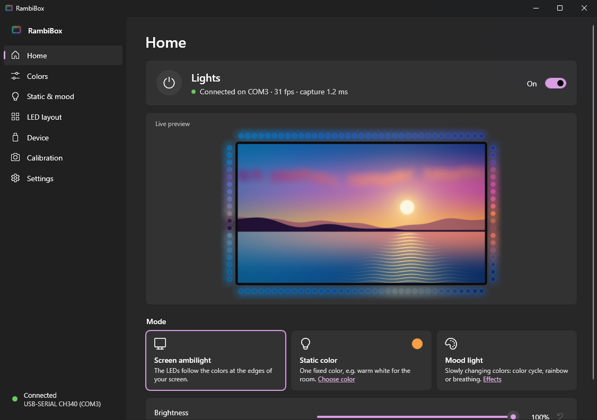
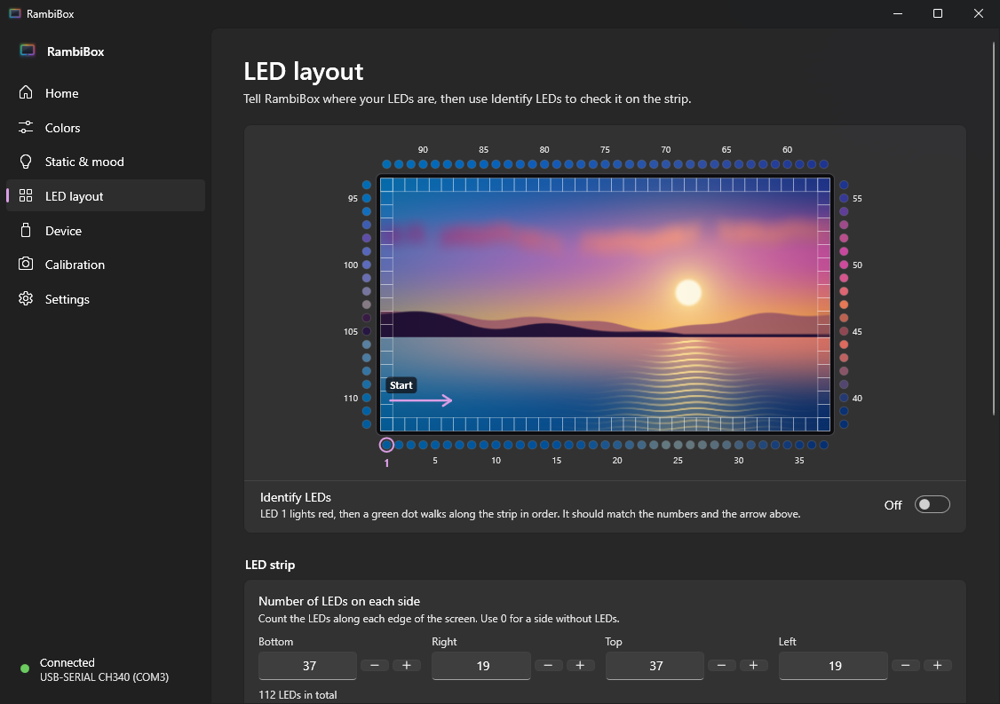
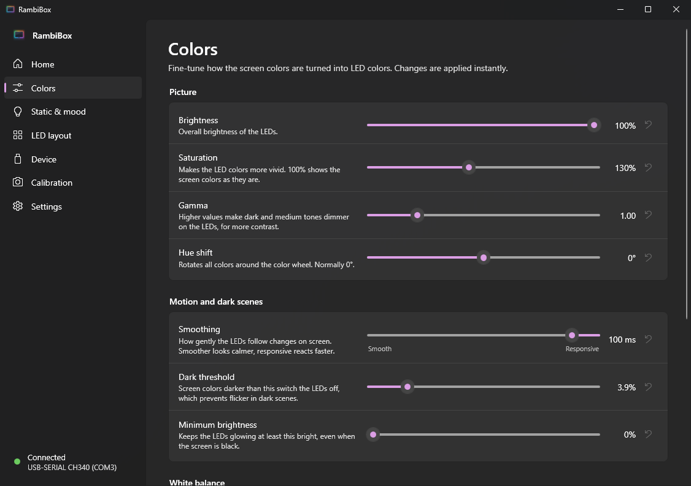
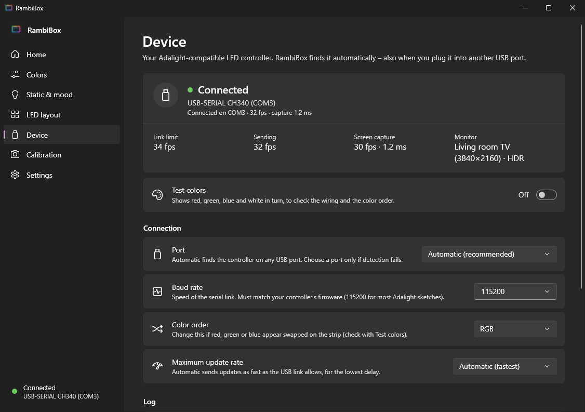
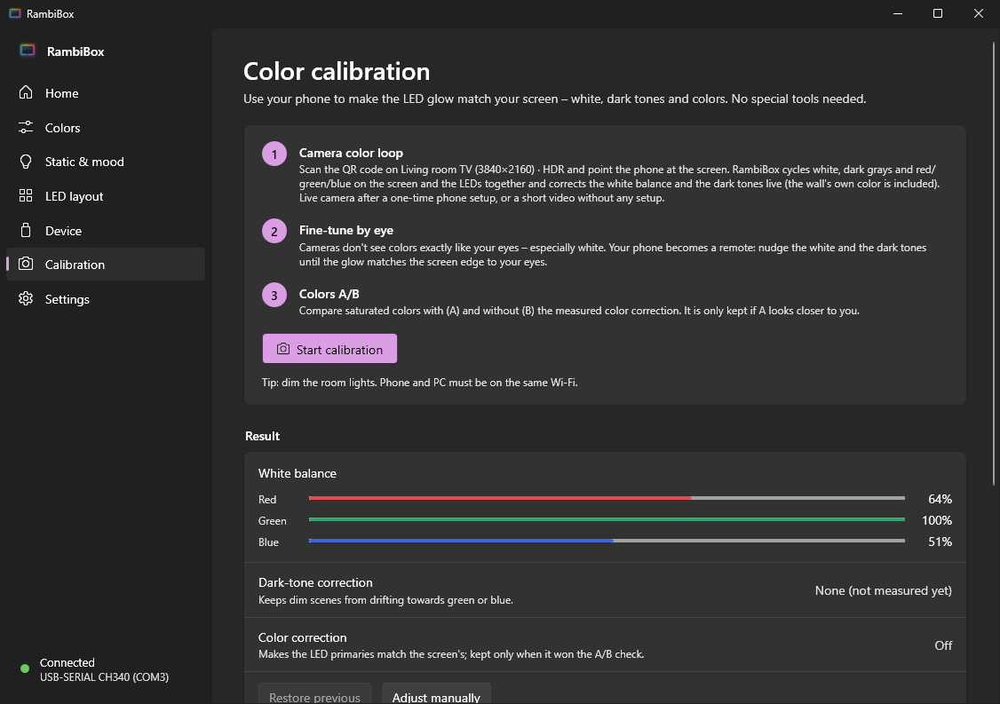
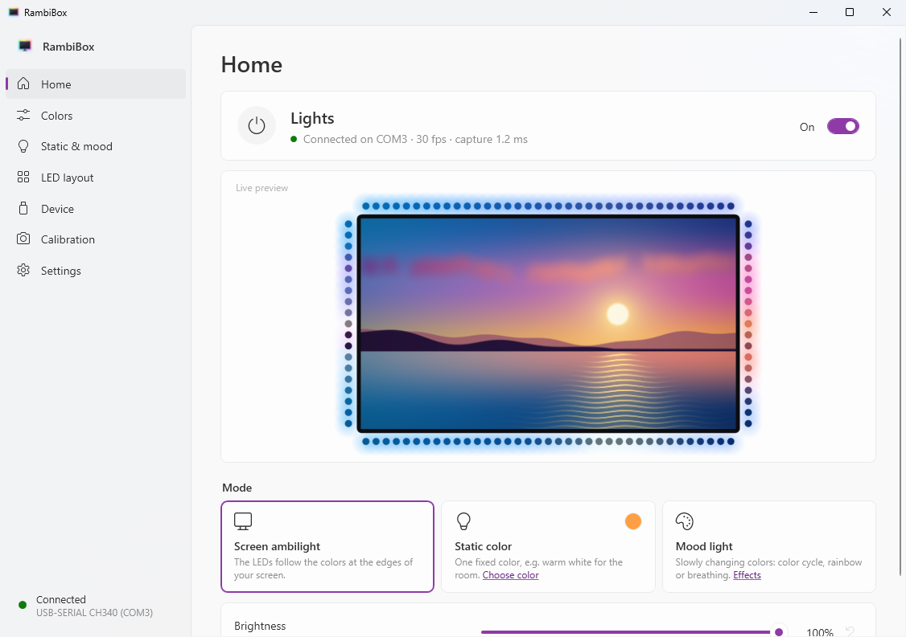
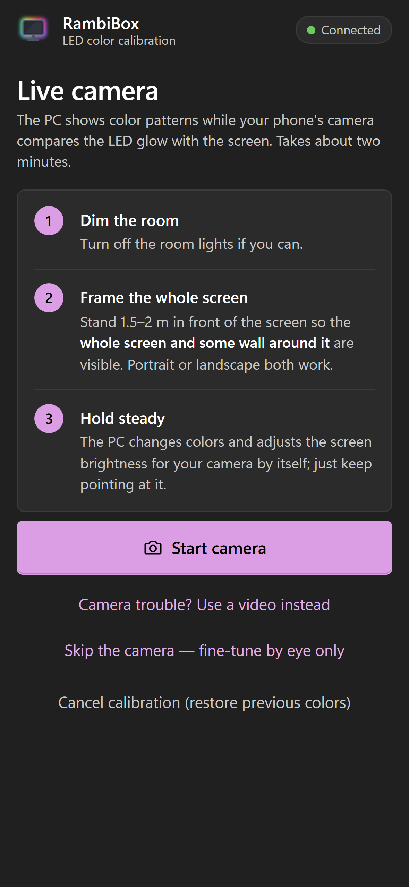
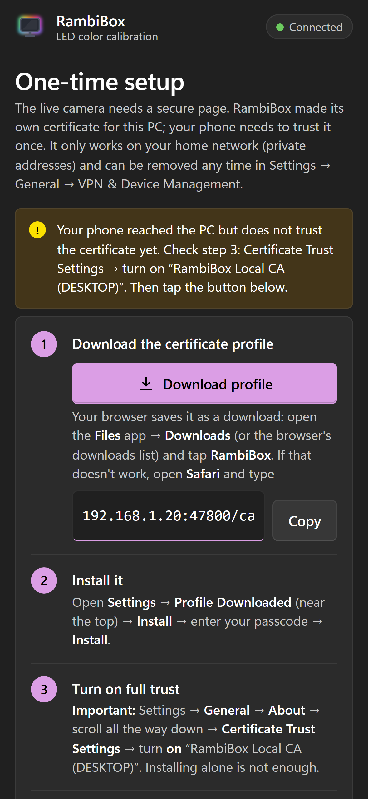
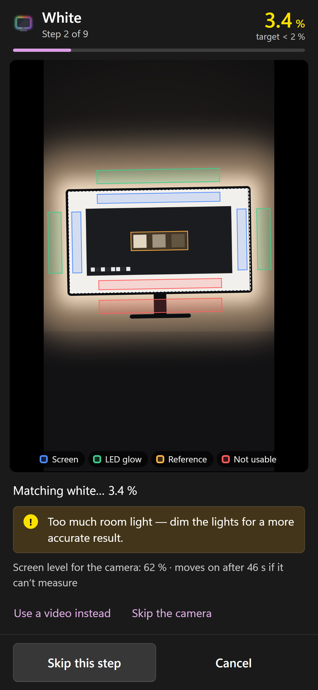
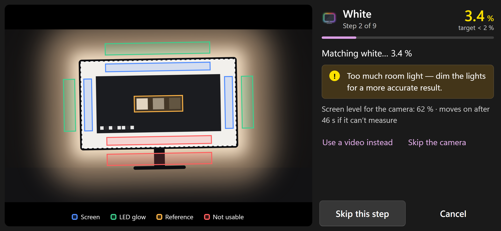
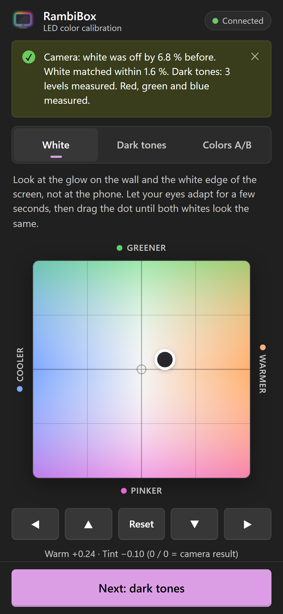
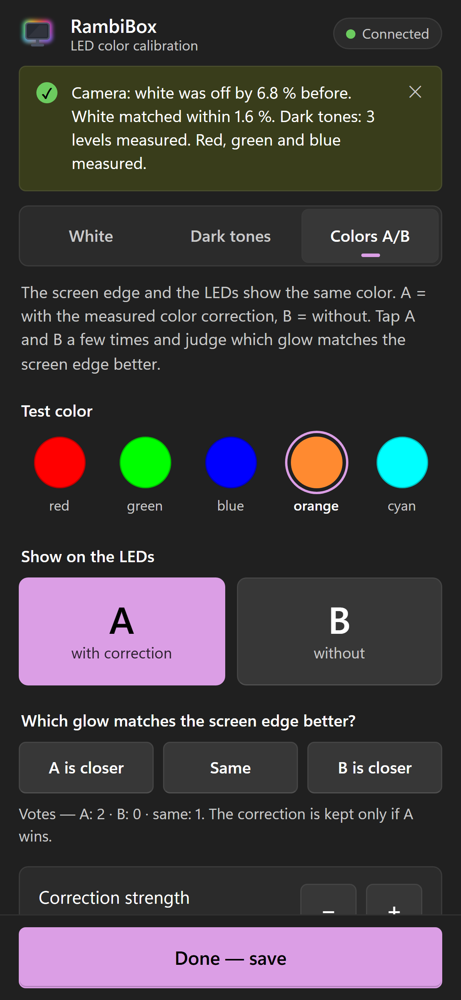
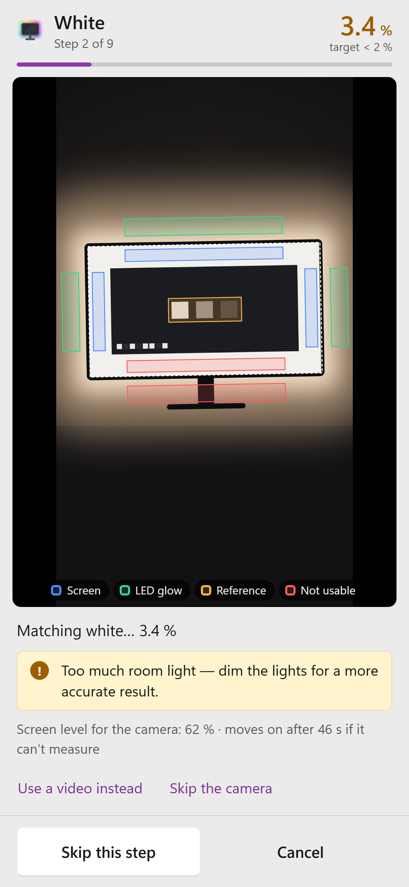
Phone color calibration
LED strips are rarely neutral: white turns bluish, dark scenes drift green, the wall adds its own tint. RambiBox measures all of that with your phone's camera. No colorimeter, no app to install.
Start the calibration on the Calibration page, scan the QR code and point the phone at the screen so it sees the screen and the glow on the wall.
Screen and LEDs cycle through room light, white, dark grays and red, green and blue together — every frame tagged with a visual step code. White balance and the dark tones are corrected live, including the wall's own color. RambiBox also measures an LED color matrix.
The phone becomes a remote: nudge white and dark tones until the glow matches the screen edge. Then compare saturated colors A (corrected) and B (uncorrected) — the correction is only kept if A looks closer to you.
Camera sensors and your eyes see color differently — especially the narrow-band light of RGB LEDs. A camera can say "neutral" while the wall looks a little pink to you. So the camera does the heavy lifting quickly and repeatably, and you make the last call.
Live camera needs a secure page. RambiBox creates its own local certificate that only works for your home network; the phone trusts it after a one-time setup. Without it, the phone simply records a ~25 s video instead.
iPhone, one-time step: after installing the RambiBox profile, open Settings → General → About → Certificate Trust Settings and turn on RambiBox Local CA. Installing alone is not enough. On Android, install it as a CA certificate when the page asks. Phone and PC must be on the same Wi-Fi.
Install
One self-contained file of about 90 MB. No installer, no .NET runtime, no admin rights.
Get RambiBox.exe from the latest release. A .sha256 checksum is attached.
Put it anywhere (e.g. %LocalAppData%\Programs\RambiBox) and start it. On first start it imports your AmbiBox settings and offers to close AmbiBox.
The controller is detected automatically. Check the LED layout with Identify LEDs, turn on Start with Windows — done.
SmartScreen: the exe is not code-signed, so Windows may say "Windows protected your PC". Click More info → Run anyway. You can verify the SHA-256 checksum or build it yourself.
Firewall: only the phone calibration talks to your network. Allow it once for private networks when Windows asks — or use Allow… on the Calibration page.
Uninstall: turn off Start with Windows, choose Exit in the tray menu and delete the exe. Settings live in %AppData%\RambiBox, logs in %LocalAppData%\RambiBox.
With the .NET 10 SDK installed, install.cmd builds the single-file exe, copies it to %LocalAppData%\Programs\RambiBox, adds a Start menu shortcut and starts it.
git clone https://github.com/Ferrywell/RambiBox
cd RambiBox
install.cmdHardware
If AmbiBox could drive it as an Adalight device, RambiBox can too.
Ada (e.g. FastLED "LEDstream")FAQ
Only one program can use the LED controller. Usually that is AmbiBox (or Prismatik, Arduino's serial monitor…). RambiBox detects a running AmbiBox and offers to close it and remove it from startup. The AmbiBox shortcut is kept as %AppData%\RambiBox\AmbiBox.lnk.disabled, so this is reversible.
No. It is only read once to import your settings (LED layout, white balance, saturation, smoothing, static color, port). You can re-import any time from Settings while it is still installed.
Yes — allow Private networks only. The phone calibration runs a small web server on TCP ports 47800–47820 while the calibration is open (at most 45 minutes). It answers only private-network addresses, needs a random token from the QR code, and serves only the first phone that connects. Nothing is sent to the internet. Details in SECURITY.md.
In Brave, tap Show details → Visit this website. Brave Shields add random noise to camera images ("farbling"); turn Shields off for this page (lion icon) for the best accuracy. On iPhone, open the setup link in Safari to install the profile — then enable it under Settings → General → About → Certificate Trust Settings.
Yes. HDR desktops are captured in their native 16-bit format and tone-mapped to SDR using Windows' SDR content brightness, so the LEDs look like the picture — not washed out or overly bright.
Turn on Test colors on the Device page: red, green, blue and white are shown in turn. If they are swapped, change the Color order. If the whites look tinted, run the phone calibration or adjust the white balance on the Colors page.
On LED layout, set the number of LEDs per side and the start corner and direction, then turn on Identify LEDs: LED 1 lights red and a green dot walks along the strip — it should follow the numbers and the arrow in the preview.
Games in borderless or windowed fullscreen work fine, and so does most exclusive fullscreen on Windows 10/11. Copy-protected video (some streaming apps and browsers with hardware DRM) can appear black to any screen capture — then the LEDs stay dark. Playing such video in a browser with hardware acceleration turned off usually helps.
No. RambiBox is an independent open-source project. It can read AmbiBox settings so switching is painless.
Free, open source and ready in a minute. Download the exe, start it, and your LED strip follows the picture.